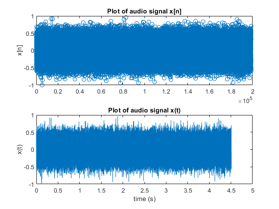
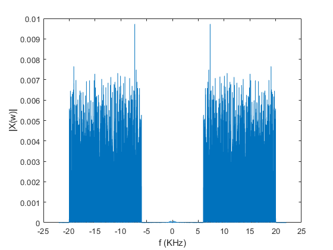
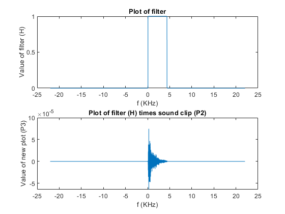
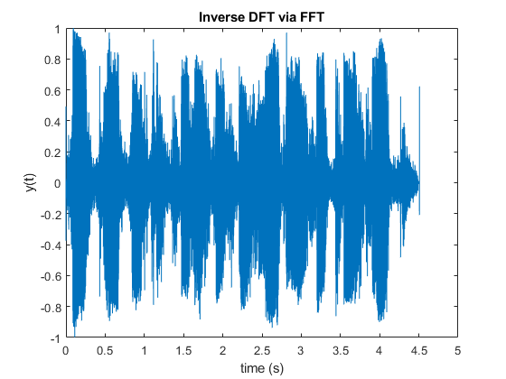

Contents
John Barney LSZ836
%%%%%%%%%%%%%%%%%%%%%%%%%%%%%%%%%%%%%%%%%%%%%%%%%%%%% % ENEE 3250 Homework 5 #1: Ideal-Low Pass Filter for % corrupt sound clip. %%%%%%%%%%%%%%%%%%%%%%%%%%%%%%%%%%%%%%%%%%%%%%%%%%%%% clear; clc; close all;
%%%%%%%%%%%%%%%% PART 1 %%%%%%%%%%%%%%%%%%%%%%%%%%%%%%%%%%%%%%%%%%
%%%% Use matlab function "audioread" to get sampled sound clip %%%% % Type "help audioread" w/o quotes in matlab command window % to see how it is used. Make sure to get both audio and sampling rate. [Y, Fs] = audioread("noise.wav"); %%%% Play the audio clip using the function "sound" to hear the clip %%%% % Type "help sound" w/o quotes in matlab to determine how to use. sound(Y,Fs) %%%% Plot the audio signal x[n]. %%%% % This plot should be 1 of 2 subplots with 2 rows and 1 column subplot(2,1,1), stem(Y) title('Plot of audio signal x[n]'), ylabel('x[n]') %%%% Plot the audio signal x(t). %%%% % You can determine the clip duration t from Fs and the length of x. % This plot should be 2 of 2 subplots with 2 rows and 1 column time = length(Y)/Fs; % ~4.5 seconds dt = 1/Fs; t = (0:length(Y)-1)*dt; % converting x axis to matrix for plotting subplot(2,1,2), plot(t,Y); xlim([0 5]); title('Plot of audio signal x(t)'), xlabel('time (s)'), ylabel('x(t)')
%%%%%%%%%%%%%%%% PART 2 %%%%%%%%%%%%%%%%%%%%%%%%%%%%%%%%%%%%%%%%%%
%%%% Plot the magnitude of the Fast Fourier Transform (FFT) of x using plotFFT %%%% % You can use help plotFFT to see how plotFFT works. Make sure to % store the FFT (P2) and the frequency range (f) x = Y; [P2, f] = plotFFT(x, Fs); figure %%%% Design an ideal filter, H, to eliminate the noise in the system %%%% % Make sure your filter is the same length as the FFT from the step above % Also make sure the filter is applied to the correct range of values, % which can be found from the frequency range vector. There is no need to % add a delay. H = zeros(1, length(f)); for i = 1:length(f) if f(1,i)>90 && f(1,i)<4400 % not exactly 80 to 8000 range for clarity H(1,i) = 1; end end %%%%% Plot your ideal filter with the x-axis in KHz %%%% % This Plot should be 1 of 2 subplots with 2 rows and 1 column. % Make sure the filter covers the frequency range you desire. If not, % adjust your code above. subplot(2,1,1), plot(f/1000, H), title('Plot of filter'), xlabel('f (KHz)'), ylabel('Value of filter (H)') %%%% Multiply the FFT of the sound clip with H(w) and plot the result %%%% % This plot should be 2 of 2 subplots. You will likely get a memory error % if you try to multiply the vectors. If so, use a for loop to multiple % each value. % P3 = P2.* H % use a for loop for this multiplication P3 = zeros(1,length(P2)); for i = 1:length(P2) P3(1,i) = H(1,i)*P2(i,1); end subplot(2,1,2), plot(f/1000, real(P3)) title('Plot of filter (H) times sound clip (P2)'), xlabel('f (KHz)'), ylabel('Value of new plot (P3)') 
%%%%%%%%%%%%%%%% PART 3 %%%%%%%%%%%%%%%%%%%%%%%%%%%%%%%%%%%%%%%%%%
%%%% Plot the inverse Fourier transform, y, using plotIFFT %%%% % Type 'help plotIFFT' for details. y = plotIFFT(P3, t); %%%% Play the filtered sound clip using Matlab function sound %%%% pause(4.6); % pause for before and after filter sound() function sound(y, Fs);
Name the voice of the cartoon character heard in filtered sound clip
Marvin The Martian: "oh drat these computers, they're so naughty and so complex"